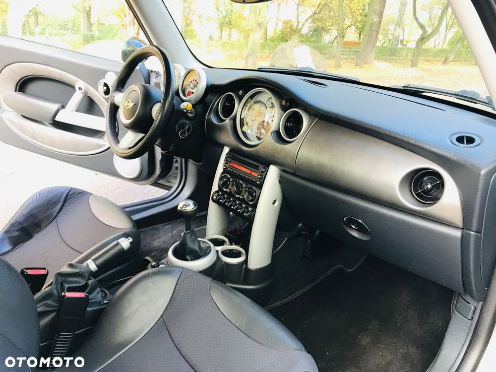
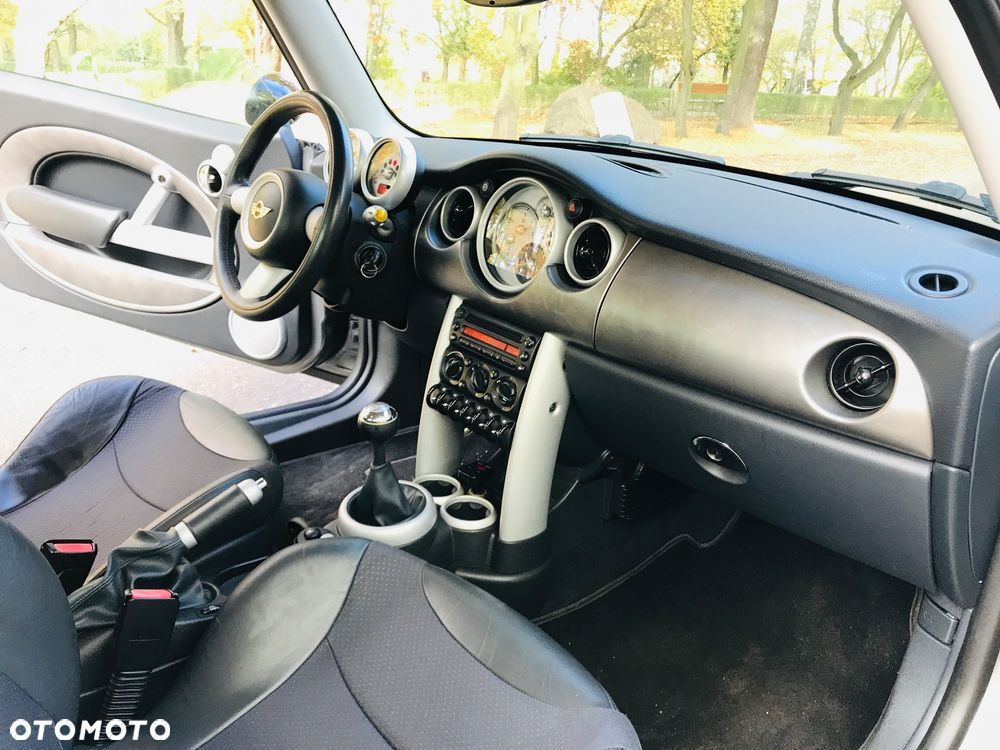

Do sprzedania bardzo ładny Mini Cooper S R53 Lift w bardzo dobrym stanie technicznym i wizualnym co można zobaczyć na dołączonych zdjęciach.
Samochód wyprodukowany we wrześniu 2005r i sprowadzony do kraju ze Szwajcarii w kwietniu 2021r i od tamtego czasu jestem jedynym właścicielem.
Układ kierowniczy i zawieszenie charakterystyczne dla tego modelu ( twardy i sztywny ) w bardzo dobrym stanie, dobrze trzyma się drogi, delikatnie i płynnie się prowadzi, zarówno na prostych odcinkach jak i na zakrętach, nie ściąga, brak stuków.
Układ hamulcowy bez zastrzeżeń, znikome zużycie tarcz oraz klocków zarówno na przedniej jak i na tylnej osi. ( klocki + tarcze oryginał ATE )
Silnik wzorowo odpala bez względu na panujące warunki atmosferyczne, pracuje cicho i równo w pełnym zakresie obrotów.
Silnik suchy ( nie myty )
Silnik to 1.6 PB doładowany kompresorem generujący moc 170 KM.
Wnętrze w świetnym stanie, czyste i zadbane.
Eementy plastikowe nie porysowane czy połamane.
Tapicerka w doskonałej kondycji. Fotel kierowcy bez przetarć.
Skórzana kierownica bez uszkodzeń i przetarć.
Powłoka lakiernicza w bardzo dobrym stanie.
Brak wgnieceń czy zarysowań.
Samochód bardzo dobrze się prezentuje, brak oznak korozji !!!
Samochód świeżo po serwisie klimatyzacji
+ ozonowanie wnętrza
do samochodu posiadam:
- Dowód rejetracyjny ( badanie techniczne do października 2025r )
- Polisa OC ( ważna do października 2025r )
- 2 x kluczyk
Na życzenie klienta możliwości sprawdzenia na stacji diagnostycznej.
Samochód nie użytkowany w zimie z tego tez powodu brak opon zimowych.
Samochód użytkowany tylko na weekendowe wyjazdy, w przeciągu 4 lat samochodem zrobiłem tylko 12 tys km.
Olej silnikowy wymieniany raz w roku na wiosnę.
Samochód do obejrzenia w miejscowości Olkusz ( województwo Małopolskie )
Więcej informacji pod nr tel
Jeśli oglądasz to ogłoszenie na olx wejdź na otomoto znajdziesz tam więcej zdjęć.
 
